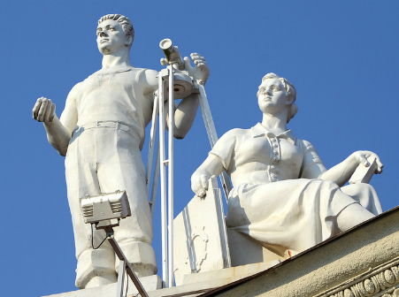
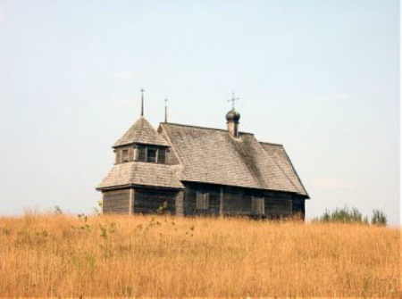
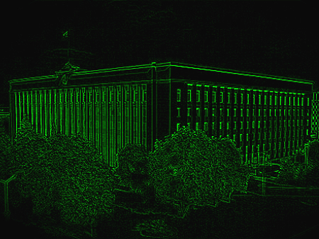
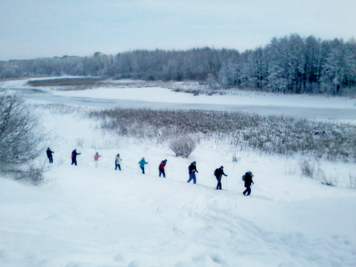

Sightseeing (Minsk's best) tour
Sightseeing (Minsk's best) tour
This is a trip around the most beautiful, interesting and bright points of Minsk. The most significant monuments, persons and legends of our city are in one trip. The city of eclectic mixture will meet you, where the spires of the old town are towering to the sky together with the modern office blocks...
(description, prices, terms)
 Count Czapski's Minsk
Count Czapski's Minsk
This is a trip around some places related to a great Minsker, count Karal Huten-Czapski (1860-1904). He originated from a nobel rich family of the Huten-Czapskis with old german roots, studied in Petersburg and Germany, spoke polish, but he became a passionate of Minsk, devoting his life to the city at the post of city's governer. Thankful to him Minsk arised...
(description, prices, terms)
 Minsk's hippies
Minsk's hippies
This is a tour into the hairy and liberated 60-ties and 70-ties. Minsk's youth listened to the new kind of music by the western radio-waves (that were muffeled by KGB). They were dreaming to play like "Beatles" and "Led Zeppelin"...
(description, prices, terms)
 Lošycki park's mysteries
Lošycki park's mysteries
There are so many stratums for this framed space, chronometers are going off-scale, you should be careful not to fail in the time, the time machine is going to break down. The shadows of the dead are trailing in parallel with those who are alive, wandering by the lost pathes, hiding in the depth of the park, flickering among the old trees...
(description, prices, terms)>

Demigods of Minsk: introduction to monumental sculpture of belarusian capital's roofs
(description, prices, terms)
(description, prices, terms)
 Jewish Minsk
Jewish Minsk
In XVI cent. Judaic praying was already sounded in Minsk. After the Edict about the Pale of Settlement (end of XVIII cent.) Minsk became one of the biggest Jewish sites in the Russian Empire. The number of synagogues rose up, local markets were full of talks on Yiddish, the city became a centre of Jewish business. Rakaŭskaje pradmiescie is the most famous Jewish district of Minsk that survived. It became a core of Jewish ghetto in WW II...
(description, prices, terms)
 Dreams and workdays of Traktarahorad:
walking tour around Minsk Tractor Works' settlement
Dreams and workdays of Traktarahorad:
walking tour around Minsk Tractor Works' settlement
Great history of exemplary socialist settlement mixed with little stories of its constructors and inhabitants in order to become an entire narrative. Constructed first in the post-war Minsk by german prisoners of war and belarusian villagers, it became a symbol of belarusian capital's rebirth, a symbol of giving back of “urbanity” of the Belarusians...
(description, prices, terms)
 Zaslaŭje - Ratamka - Minsk sea
Zaslaŭje - Ratamka - Minsk sea
(outing, 9 hours, 42 km.)
This is a spectacular schoolbook of history of Belarus unfolded on a picturesque field: from ancient fortress until modern production departments. The small town of Zaslaŭje absorbed the dramatic nature and contrariety of belarusian context. Zaslaŭje's railway station with symbolic name "Belarus" was situated on a state border between Poland and USSR, which had cut Belarus in twain. In this time a number of pillboxes were built here from both sides...
(description, prices, terms)

Touch the roots
(outing, 8 hours, 37 km.)
Who told you that Minsk is on its original place? And what sort of ramparts do overlook not far away from the modern metropolis near Mienka river? We're going to touch the secret which is inside of the impressive earth fortress most probably called Miensk a long time ago... Also, by green country path, we'll reach a famous open air museum with the most distinctive examples of Belarusian traditional architecture. Authentic only!..
(description, prices, terms)
(outing, 8 hours, 37 km.)
Who told you that Minsk is on its original place? And what sort of ramparts do overlook not far away from the modern metropolis near Mienka river? We're going to touch the secret which is inside of the impressive earth fortress most probably called Miensk a long time ago... Also, by green country path, we'll reach a famous open air museum with the most distinctive examples of Belarusian traditional architecture. Authentic only!..
(description, prices, terms)
 Gravitation must die
Gravitation must die
(outing, 8 hours, 42 km.)
Baravaja (museum of aircrafts) - Raŭbičy (Olympic sport centre, belarusian folk crafts museum, roman catholic and orthodox churchs of the premium cottage settlement - Dubrovinskaje artificial lake (beach, at will)
(description, prices, terms)
 CYCLING 1812
CYCLING 1812
(outing, 11 hours, 60 km.)
Barysaŭ - Starabarysaŭ - Studzionka - Bryleŭskaje polie
Around the main points of Napoleon's campaign at Biarezina river
 Suburbs of Minsk: Karališčavičy
Suburbs of Minsk: Karališčavičy
(outing, 4 hours, 20 km.)
 Tastes, colours, sounds of motherland: around the country of potters, cooks, nobles and
composers
Tastes, colours, sounds of motherland: around the country of potters, cooks, nobles and
composers
Zaslaŭje - Haradok - Kreva / Zalessie
(2-days outing, 1 night at potters' village house)
 Belarusian idyll
(outing)
Belarusian idyll
(outing)
Viazynka - Dubrava - Radaškovičy
 Way to foreverness: around memorial sites of humanitarian catastrophes of 1930-40-s
Way to foreverness: around memorial sites of humanitarian catastrophes of 1930-40-s
(outing, 4 hours, 20 km.)
Blahaŭščyna-Šaškoŭka-Trascianiec
About Stalin's time and WW II massacres

Myths and legends of nonconformist artists of Minsk of 1980-s: in the footsteps of art-community "Bielaruski klimat"
 Ecumenical Minsk: god-seeking adventures
Ecumenical Minsk: god-seeking adventures
A tour around Minsk's churches and temples of various religions and denominations

Lošycki park's winter fairy tale
A ski tour around old park of Lošyca
__
A ski tour around old park of Lošyca